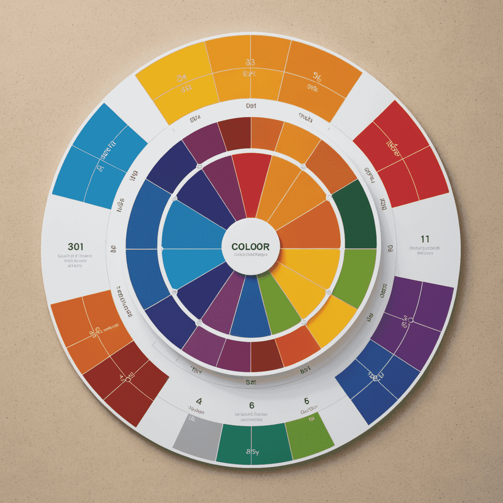
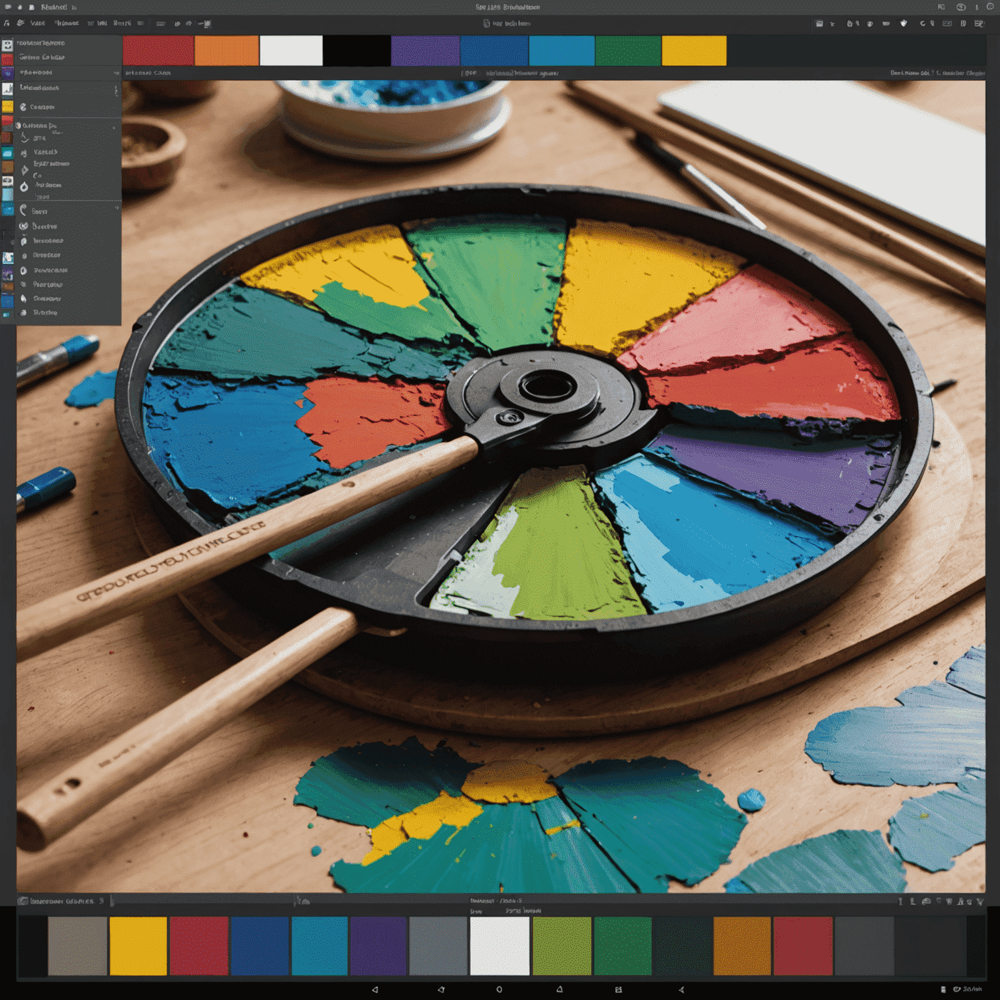

The Evolution of Color Theory in Digital Design
In the ever-evolving world of graphic design, the intersection of traditional color theory and cutting-edge algorithms has sparked a revolution in how we perceive and utilize color in digital spaces.
The Foundation of Color Theory
Color theory, a cornerstone of design for centuries, has traditionally relied on principles such as the color wheel, complementary colors, and color harmony. These foundational concepts have guided artists and designers in creating visually appealing and emotionally resonant work.
Enter the Digital Age
With the advent of digital design tools and AI-powered platforms like Runway ML, the application of color theory has undergone a significant transformation. Algorithms now play a crucial role in how we select, combine, and perceive colors in digital environments.
Algorithmic Color Selection
AI-driven color selection tools, such as those found in Gen-3 Alpha systems, can analyze vast databases of color combinations and user preferences to suggest optimal color palettes. These algorithms consider factors like cultural context, current trends, and psychological impact, often surpassing human intuition in creating effective color schemes.
Dynamic Color Adaptation
One of the most revolutionary aspects of algorithmic color theory is the ability to dynamically adapt color schemes based on user interaction, environmental factors, or even emotional states. This level of personalization was unimaginable in traditional color theory applications.
The Impact on Design Workflow
The integration of AI in color theory has streamlined the design processcess, allowing designers to experiment with a wider range of color combinations more efficiently. Tools powered by machine learning can generate countless variations of color schemes, pushing the boundaries of creativity.
Challenges and Considerations
While algorithms have enhanced our ability to work with color, they also present new challenges. Designers must be cautious not to over-rely on AI suggestions, maintaining a balance between algorithmic efficiency and human creativity. Additionally, the ethical implications of AI-driven design decisions must be carefully considered.
The Future of Color in Digital Design
As AI continues to evolve, we can expect even more sophisticated applications of color theory in digital design. From predictive color trends to emotionally responsive interfaces, the fusion of traditional color principles and advanced algorithms offersmises to open new frontiers in visual communication.
The evolution of color theory in the digital age exemplifies the transformative power of AI in graphic design. As we continue to explore this synergy between human creativity and machine intelligence, we stand on the brink of a new era in color perception and application, reshaping the very foundations of visual design.